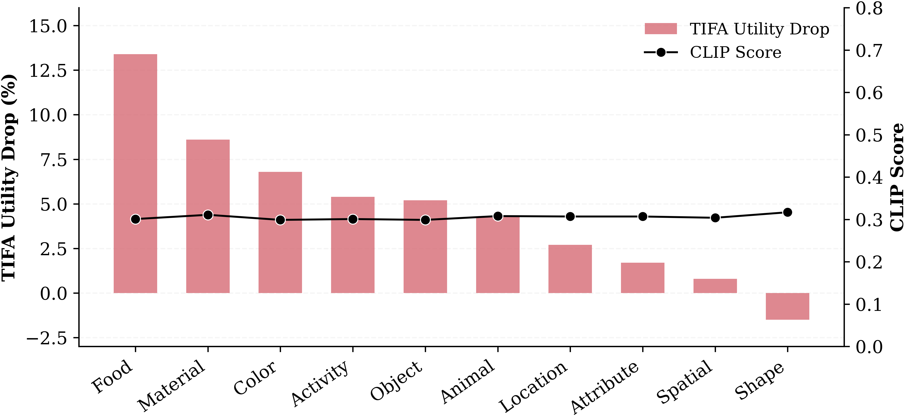
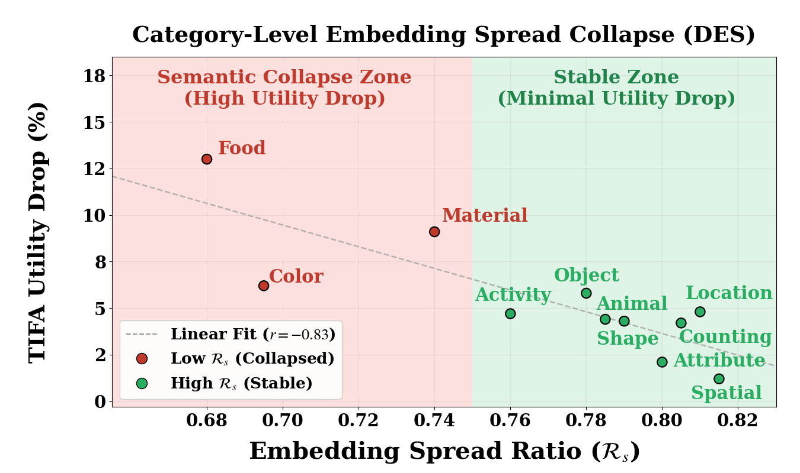
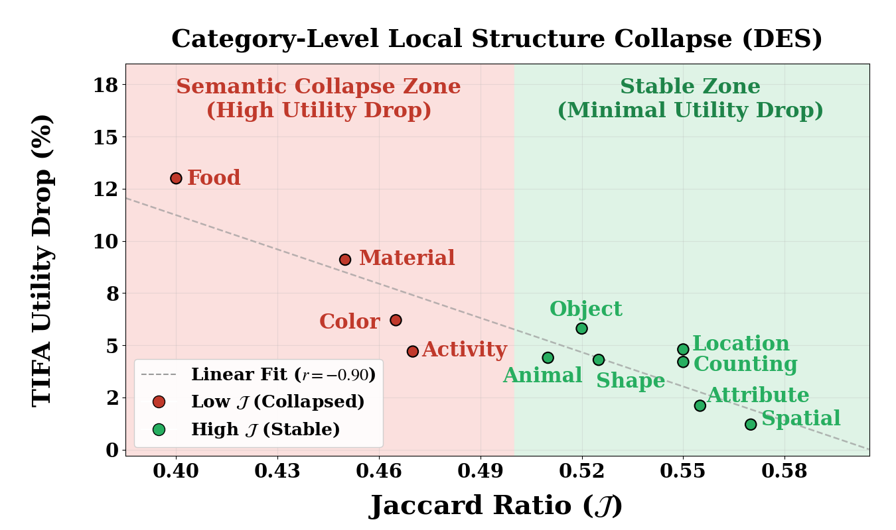

The Illusion of High Utility in Safety Alignment of Text-to-Image Diffusion Models
ECCV 2026
ECCV 2026
Safety alignment of text-to-image (T2I) diffusion models aims to suppress harmful generations while preserving utility on benign prompts. Recent methods often appear to deliver high safety with high utility, but this conclusion rests largely on coarse global utility metrics (e.g., FID, CLIPScore) that are insensitive to fine-grained semantic correctness, creating an illusion of high utility. We show that when utility is measured with structured evaluation, this illusion breaks: on TIFA (Text-to-Image Faithfulness evaluation with Question Answering), safety-aligned models suffer substantial drops in semantic fidelity, including failures in object counts, attributes, and relationships. To diagnose the source of this gap, we analyze the text-encoder prompt embedding space and uncover semantic collapse, a contraction of embedding spread coupled with distortion of inter-prompt similarity structure, which strongly correlates with structured utility loss. Guided by this insight, we propose Structure-Aware Geometric Regularization (SAGE), a safety alignment objective that explicitly preserves embedding spread and inter-prompt relational structure during adaptation. Our method restores structured utility (TIFA +5.0% over prior state-of-the-art) while maintaining strong safety performance and competitive coarse-grained utility scores.

Prior T2I safety methods, summarized in the table below, evaluate safety through attack success rates while assessing utility with global measures such as CLIPScore, which captures overall image–text similarity. Under this metric, recent methods appear to match the utility of the base model, suggesting that the safety–utility tradeoff has been largely resolved. We argue that this conclusion is incomplete: for T2I generation, utility is not only a matter of visual quality or global image–text similarity, but of whether the model correctly renders the objects, attributes, counts, and relationships specified in the prompt.
This gap produces an illusion of high utility. When the same models are evaluated with structured, fine-grained benchmarks such as Text-to-Image Faithfulness Evaluation with Question Answering (TIFA), a different picture emerges: despite competitive CLIPScore, state-of-the-art safety alignment methods consistently underperform the base model in compositional and semantic fidelity. The figure above illustrates this directly: the safety-aligned model attains a higher CLIPScore than the base model while violating explicit prompt constraints such as the yellow beak and the specified vase colors and count, whereas TIFA penalizes precisely those failures.
Utility evaluation setups used in prior T2I safety methods. Most prior work reports coarse metrics such as FID and CLIPScore, which motivates testing safety-aligned models with structured metrics as well.
| Method | Utility Dataset | FID | CLIPScore |
|---|---|---|---|
| DES | COCO | ✓ | ✓ |
| STEREO | I2P Unsafe Prompts | ✓ | ✓ |
| ADV-Unlearn | COCO | ✓ | ✓ |
| SALUN | Non-forget Classes | ✓ | × |
| ESD | COCO | ✓ | ✓ |
| RECE | COCO | ✓ | ✓ |
| RACE | COCO | ✓ | ✓ |
| MACE | COCO | ✓ | ✓ |
| SLD | COCO, Human Study | ✓ | ✓ |
| AlignGuard | COCO | ✓ | ✓ |
| Safe-CLIP | COCO, LAION-400M | ✓ | ✓ |
| SafeR-CLIP | Parti-Prompts | × | ✓ |
CLIPScore stays nearly constant across semantic categories for DES, hovering around 0.30. From that global signal alone, utility appears broadly preserved after safety alignment.
TIFA exposes category-specific degradation: food, material, color, activity, and object prompts lose much more semantic fidelity than CLIPScore indicates.

The TIFA gap raises a natural question: what changes in the model lead to these compositional failures? Since many safety methods operate by fine-tuning the text encoder, we analyze how safety alignment reshapes the prompt embedding space. We quantify semantic collapse as a geometric shift characterized by (i) embedding spread contraction and (ii) neighborhood distortion.
Given $B$ benign prompts with $\ell_2$-normalized embeddings $\mathbf{z}^{(i)}$ and mean embedding $\bar{\mathbf{z}}$, the spread is the average squared distance from the batch mean:
$\mathcal{R}_s < 1$ indicates embedding contraction; $\mathcal{R}_s \approx 1$ means the spread matches the base model.
Spread alone does not capture whether relative relationships among prompts are preserved. For prompt $i$, we measure the overlap of its top-$K$ neighbors before and after alignment:
A high Jaccard score means the model retains its relational logic and subject–attribute binding.
Notation. $\mathbf{z}^{(i)}$ embedding of prompt $i$ · $\bar{\mathbf{z}}$ mean embedding over batch · $B$ batch size · $\mathcal{N}_i^{(0)}$, $\mathcal{N}_i^{(\theta)}$ $k$-NN of prompt $i$ in the base and aligned models · $\mathcal{S}_0$, $\mathcal{S}_\theta$ spread before and after alignment · $\operatorname{sg}$ stop gradient.


Structured utility loss tracks semantic collapse: embedding spread contraction together with neighborhood distortion
Structure-Aware Geometric Regularization (SAGE) augments DES with two regularization terms that prevent embedding collapse and local semantic distortion. The text encoder $T_\theta$ is trained against the frozen base encoder $T_0$; the UNet stays frozen.
Enforces a lower bound on the embedding spread of $T_\theta$ relative to $T_0$:
A one-sided penalty: it fires only when the spread falls below the base model, and never forces the space to expand.
Matches pairwise similarities over the Top-$K$ neighbor pairs $\mathcal{K}$ of the base encoder, under a perturbation along the unsafe concept direction:
$\tilde{T}_\theta(p_i) = T_\theta(p_i) + \alpha\,T_0(\text{“nudity”})$ keeps LSA from restoring geometry correlated with unsafe concepts.
Full training objective

SAGE reaches 75.4 TIFA — 1.2% below the base model and 5.0% above DES — at 1.2% average ASR, while preserving embedding geometry better than prior text-encoder methods (0.96 spread ratio, 0.63 Jaccard overlap).
Category-wise TIFA evaluation. Red marks the largest drop from the base model in each row.
| Method | Obj. | Ani. | Loc. | Col. | Food | Mat. | Att. | Cnt. | Sha. | Act. | Spa. | TIFA Avg ↑ | CLIP ↑ | FID ↓ |
|---|---|---|---|---|---|---|---|---|---|---|---|---|---|---|
| Base (SD v1.4) | 78.9 | 82.8 | 89.8 | 79.9 | 84.1 | 83.7 | 79.6 | 63.6 | 58.0 | 68.2 | 52.9 | 76.3 | 26.5 | 17.23 |
| DES | 73.2 | 78.5 | 85.4 | 73.7 | 71.1 | 74.6 | 77.4 | 59.3 | 53.6 | 63.5 | 51.7 | 71.6 ↓6.2% | 25.5 | 16.23 |
| AdvUnlearn | 67.1 | 69.6 | 79.7 | 64.6 | 68.7 | 74.6 | 68.0 | 44.5 | 37.7 | 49.9 | 41.9 | 63.1 ↓17.3% | 23.9 | 20.67 |
| STEREO | 71.7 | 75.4 | 86.9 | 73.7 | 79.4 | 77.5 | 74.2 | 61.9 | 52.2 | 58.3 | 48.2 | 69.9 ↓8.4% | 24.6 | 21.69 |
| RECE | 78.4 | 80.5 | 88.0 | 79.9 | 80.2 | 85.7 | 77.6 | 61.1 | 66.7 | 65.6 | 50.9 | 74.8 ↓2.0% | 26.0 | 17.51 |
| MACE | 62.9 | 68.7 | 79.6 | 62.5 | 54.9 | 68.9 | 69.6 | 55.5 | 46.4 | 53.9 | 47.4 | 62.6 ↓18.0% | 23.8 | 24.87 |
| SafeCLIP | 59.0 | 67.4 | 79.1 | 69.5 | 58.1 | 75.2 | 71.4 | 56.6 | 50.0 | 46.6 | 40.5 | 60.1 ↓21.2% | 22.3 | 33.40 |
| SafeRCLIP | 58.6 | 66.1 | 78.2 | 69.1 | 58.5 | 74.6 | 71.6 | 55.9 | 50.7 | 46.1 | 43.7 | 60.7 ↓20.4% | 22.4 | 32.31 |
| SLD | 77.3 | 80.0 | 88.0 | 77.8 | 82.3 | 81.3 | 76.8 | 63.0 | 52.2 | 63.2 | 50.4 | 73.9 ↓3.1% | 25.5 | 21.85 |
| Ours | 77.6 | 80.8 | 88.3 | 79.6 | 83.5 | 83.7 | 80.1 | 61.1 | 58.0 | 66.3 | 53.8 | 75.4 ↓1.2% | 26.4 | 15.93 |
SAGE achieves best fine- and coarse-grain average results for safety methods
Attack Success Rate (ASR) and CLIPScore. Lower ASR is safer; higher CLIPScore retains more utility.
| Method | MMA ↓ | Sneaky ↓ | I2P-S ↓ | Ring ↓ | P4D ↓ | Avg. ASR ↓ | CLIPScore ↑ |
|---|---|---|---|---|---|---|---|
| Base (SD v1.4) | 80.4 | 42.7 | 34.3 | 98.1 | 82.4 | 67.6 | 26.5 |
| DES | 0.2 | 0.8 | 1.2 | 2.8 | 0.0 | 1.0 | 25.5 |
| Adv-Unlearn | 0.3 | 0.8 | 1.1 | 0.0 | 0.0 | 0.4 | 23.9 |
| SafeCLIP | 25.2 | 17.7 | 24.0 | 65.4 | 57.7 | 38.1 | 22.3 |
| SafeRCLIP | 24.6 | 16.1 | 17.9 | 73.8 | 43.0 | 35.1 | 22.4 |
| STEREO | 2.2 | 3.2 | 1.1 | 2.8 | 3.3 | 2.5 | 24.6 |
| SLD | 74.3 | 31.5 | 20.8 | 98.1 | 74.3 | 59.8 | 25.5 |
| RECE | 36.1 | 6.5 | 6.0 | 15.9 | 26.1 | 18.1 | 26.0 |
| MACE | 8.6 | 2.4 | 6.3 | 9.4 | 10.3 | 7.4 | 23.8 |
| Ours | 0.4 | 0.8 | 1.2 | 2.8 | 1.0 | 1.2 | 26.4 |
SAGE achieves strong safety scores while preserving utility
The paper shows that the standard story around safety-utility tradeoffs is incomplete: global scores like FID and CLIPScore can hide substantial fine-grained failures. By diagnosing those failures as semantic collapse in the text-encoder embedding space, SAGE gives safety alignment a more structural target: preserve embedding spread and local relationships while steering unsafe prompts away from harmful generations.
The resulting model maintains strong robustness against unsafe and adversarial prompts while restoring much of the structured utility that prior safety methods lose, suggesting that representation geometry is a practical lever for safer and more faithful text-to-image generation.
@misc{yousaf2026illusionhighutilitysafety,
title={The Illusion of High Utility in Safety Alignment of Text-to-Image Diffusion Models},
author={Adeel Yousaf and Soumik Ghosh and James Beetham and Amrit Singh Bedi and Mubarak Shah},
year={2026},
eprint={2607.00402},
archivePrefix={arXiv},
primaryClass={cs.CV},
url={https://arxiv.org/abs/2607.00402},
}